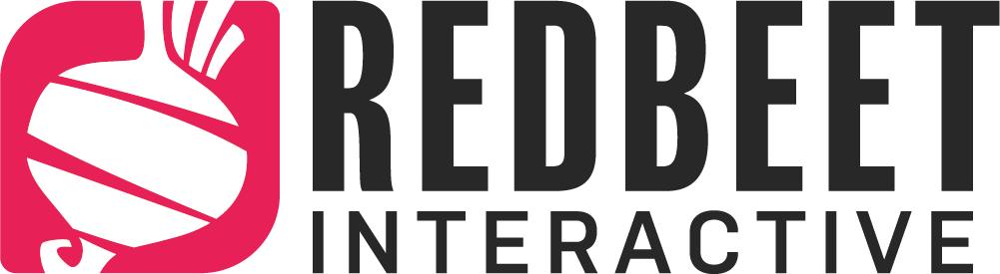

Want to work with us?
What is it like working at Redbeet?
In May 2018 we released our debut title Raft on Steam Early Access, and are now embarking upon an adventure to find new talents who wish to join our team. We work closely together in an open and friendly office environment where we openly share ideas and feedback.
Apart from a salary, you will also receive occupational pension and a great set of insurances. As we want our coworkers happy and healthy we offer a wellness grant to help pay for activities such as gyms, sports etc. A while back we also transitioned into a 7-hour work day to promote a good work/life balance, and we strive to keep overtime to a minimum, which has worked out very well so far.
The office currently offers table tennis, a Switch and some VR equipment for past time and break activities, but we are open to expand this section if you have any ideas?
While Skövde might be a smaller town, it offers a lot of community and activities, especially for game developers. There are a lot of game companies here which usually makes it easy to find people if you want to talk games, play board games or grab something to drink. Game Developer Pub is a recurring evening of food, drinks and socializing hosted by Sweden Game Arena, where the industry and local game students come together at a local restaurant, and during fall industry professionals and beginners travel from all around the world to meet up at the Swedish Game Conference right here in town.
With the train track going right through the middle of Skövde, you are only one hour from Gothenburg and two hours from Stockholm.
Open positions
If you find an interesting position, do not hesitate to send us your CV and a cover letter to jobs@redbeetinteractive.com. If you have a portfolio or up-to-date projects we highly encourage you to attach them as well! And even if your field of expertise is not currently listed here, but you think you would fit in well, get in touch anyways!